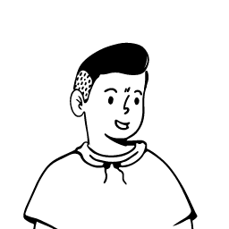

A full wardrobe and nothing to wear is not a joke. It's a design failure.
People own far more clothing than they wear, and the reason isn't bad buying. It's that they can't see the combinations. A garment sits unworn because nothing in the wardrobe has been identified as its partner, and identifying that partner takes a skill most people were never taught and don't believe they have.
The cost is daily and relentless. The same five outfits on rotation while the rest stays folded. Buying a new top because the one you own “doesn't go with anything”, which is almost never true, just unproven.
The insight that reframes it
The most useful number here isn't 82%. It's the gap between the two.
Movinga surveyed 18,000 households across 20 countries to get those two numbers. Nobody is walking around aware of the gap and shopping for a solution. They've absorbed it as a personality trait, I'm just bad at clothes, rather than a solvable information problem.
That shapes everything downstream: nobody is searching for this app. There is no query for “help me see what goes with my green shirt.” It has to prove its value inside the first thirty seconds, before the user has agreed they have a problem at all.
What ShadeMatch was, before any of this
ShadeMatch does five things. Photograph a garment and it returns colour combinations that work with it, a filter to narrow them, shopping links to Amazon, Myntra and Flipkart, and a Pinterest button that opens a search for the combination.
It works, and it's live. But building something and understanding it are different exercises, and five questions had no answer.
- ?Who is this for, specifically?
- ?What is the moment they'd open it?
- ?Why would they open it a second time?
- ?Which of these five features is the product, and which are decoration?
- ?What would I cut?
This case study is how I answered them.
The brief, written after the fact
Help people wear more of what they own, by removing the single decision that stops them, what goes with this?, standing in front of the wardrobe, in under thirty seconds, with no setup.
Success is not engagement. Success is a garment leaving the shelf.
One item in. A wearable answer out. No setup.
The scoped product does one thing: photograph a garment you own, and it tells you what works with it, instantly, with no account, no wardrobe upload, no onboarding.
Everything else was either supporting that job or competing with it. Sorting out which was the entire design exercise.
the redesigned core screen ]
Single item capture
Photograph one garment. That's the whole input. No digitisation, no tagging, no account. The lowest effort entry point in the category, and what makes a first session possible for someone who hasn't agreed they have a problem yet.
Explained colour matches
Combinations that work with the detected colour, with why in one line. A recommendation the user doesn't understand is one they can't reuse tomorrow without opening the app again.
Visualise before committing
The Pinterest link answers what a swatch structurally cannot: but what does that look like on a person? The cheapest possible bridge between an abstract palette and a real outfit.
The cut: marketplace links, removed from the core flow.
Amazon, Myntra and Flipkart links sat beside every result in the original build. They're gone from the primary path. The reasoning is in Ideation, and it's the most consequential decision here.
Everything either costs too much to start, or shows you clothes you don't own.
There's no shortage of products here. What's missing is one that answers the question at the moment it's asked. I mapped five categories of alternative, including the one most people use, which is no product at all.
Wardrobe apps
The most complete answer that exists. Digitise your wardrobe and the app builds full outfits from things you genuinely own, tracks wear frequency, plans ahead. When someone sticks with one, it works well.
The setup cost is enormous and entirely front loaded. Photographing, cropping and tagging fifty to two hundred garments is hours of labour demanded before anything is delivered. The two and three star reviews repeat the same pattern across every app: love the idea, upload twenty items, never open it again. It asks for the largest possible commitment from a user who hasn't been shown a single moment of value.
Unmatched for inspiration, and the only place that answers “what does this look like on a real person.” A visual reference layer nothing else provides.
Everything on Pinterest is a garment you don't own. It answers what looks good, never what you can wear tonight. The distance between a saved pin and an actual outfit is what ShadeMatch exists to close, which is why the redesign links out to Pinterest rather than replacing it.
Marketplace styling
Genuinely good recommendations, well merchandised, shown at the exact moment a user is receptive to them.
Every recommendation is an item for sale. The engine isn't answering what goes with this, it's answering what else can we sell this person, and the two coincide by accident. Users know it. A recommendation attached to a buy button carries a permanent trust discount, and accuracy doesn't remove it.
General AI chat
Free, immediate, capable. Upload a photo of a shirt, ask what goes with it, get a reasonable answer. The strongest competitor in the category and the least discussed.
Nothing persists. No memory of your wardrobe, no record of yesterday's question, no visual output, just text. It also needs the user to know they can ask, and to phrase it well. A capable tool with no product around it.
The actual status quo
Free, instant, no download. Holding two items up and squinting is what almost everyone does, and for confident dressers it's enough.
It doesn't scale past what you can hold, it depends on confidence the user may not have, and it fails at the moment it matters, when you're unsure. “Ask a friend with good taste” is the most used feature in this category and it isn't available at 8am on a Tuesday.
What this told me
The landscape splits along one axis: setup cost. Nobody occupies near zero setup, answer about what you already have, the position the matrix leaves empty. ShadeMatch already occupied it, because it only ever asked for one photo.
The product had the right entry point. The work was figuring out what else had to be true for that to matter.
I read the reviews of every app that failed at this.
Method
No recruited panel, the honest constraint of a self initiated project. What I did instead had two halves.
Community research. Threads across fashion advice communities, read for how people describe the moment of not knowing what goes with something. Not general complaints about clothes, that particular stuck moment.
Review mining. The more valuable half. I read the two and three star App Store and Play Store reviews of every wardrobe app in the category. One and five star reviews are noise. The middle band is where people explain, unprompted and in detail, what made them abandon a product they wanted to like.
Two and three star reviews are churn research written by the churned.
Unprompted honesty at volume, and direct evidence about how my closest competitors fail, which interviewing my own users could never have given me.
No follow up questions, no probing a contradiction, and a skew toward people motivated enough to post publicly. Nothing on the quiet majority who used a wardrobe app happily and never wrote about it.
Three clusters
“I don't trust my own eye.”
The signalThe dominant emotion isn't confusion, it's self doubt. People don't describe missing information, they describe missing a skill they believe everyone else has. The recurring pattern: owning items they genuinely like and have never once worn, with no vocabulary for why.
“The setup costs more than the problem.”
The signalAlmost entirely from review mining, and the most actionable finding in the project. The abandonment pattern is consistent: genuine enthusiasm, fifteen to thirty items uploaded, then nothing, always before the app has produced anything useful. The labour arrives before the value, every time.
“Everything is trying to sell me something.”
The signalA weary suspicion of styling advice attached to commerce. People discount recommendations automatically when a buy button is present, not because the advice is wrong but because they can't tell whether it's for them or for the retailer. The suspicion lands before the recommendation is even read.
The three findings that broke the original build
Nobody is looking for this product.
People experience the gap as a fact about themselves, not a problem with a solution. Nothing in the funnel can assume intent.
Setup cost is the category's cause of death.
Every serious competitor loses users at the same wall. One photo and no account turned out to be the moat, and it had never been identified as a decision.
Commerce contaminates advice.
Users discount any recommendation adjacent to a buy button. The original build placed Amazon, Myntra and Flipkart links beside every result, attaching a motive to the one thing that only works without one. The finding that indicts the existing product.
The business case
India's fashion ecommerce market was worth roughly $25.6B in 2025, apparel at 54% of it, Myntra alone at about $12.5B GMV. It's not a small pond, and there's obvious money in sending qualified traffic into it.
That's the trap. Affiliate revenue is the fastest path available, and taking it early destroys the asset that makes the product worth using. A styling engine that is trusted can monetise almost any way it likes later: subscription, brand partnership, retailer licensing. One that is suspected has no second act.
There's a stronger argument on the retailer's side. Apparel returns run 20 to 40% against a 20% ecommerce average, and fit and sizing drives about half. Much of the rest is the other failure: the item arrived, it was fine, and it went with nothing the buyer owned. A tool that tells someone what they can wear a garment with is a returns reduction tool in a styling app's clothes, and that's a far better pitch than affiliate clicks.
Apparel's share of a $25.6B market
The addressable side of the pitch. Sending qualified traffic into it is the obvious business model, and the one this project doesn't take.
What drives apparel returns
Fit and sizing is about half. The other half is the failure this product speaks to: an item that arrived, was fine, and went with nothing the buyer owned.
Sequencing, stated plainly: earn trust with disinterested advice first. Monetise the trust second. Never the reverse.
Two people. One wardrobe problem, arrived at from opposite directions.
The clusters resolved into two people. One owns too much and wears too little. The other keeps buying to solve a problem buying can't solve. They meet at the same moment: in front of a cupboard, holding one item, stuck.
Aditi Sharma
- Look put together without spending time or thought on it
- Wear the things she liked enough to buy and never wore
- Stop buying replacements for problems she already owns the fix for
- Owns items she loves in isolation and has never once put on
- Defaults to the same five safe outfits, bored of all of them
- Doesn't trust her own colour judgement, or advice that's selling her something
- An answer in seconds, not a system to maintain
- A reason attached to the answer, so it compounds instead of resetting
- Advice she can tell isn't trying to sell her anything

Rohan Iyer
- Stop wasting money on items that end up unworn
- Reduce returns, which he finds tedious rather than free
- Look deliberate without developing an interest in clothes
- Buys individual items with no plan for what they pair with
- Ignores marketplace “complete the look” as transparently commercial
- His fix for “nothing goes together” is buying more, which makes it worse
- A check before buying: does this work with what I own?
- Confidence at the point of spending
- Something that takes seconds, because he won't invest more than that
Why Aditi is primary
Rohan is the more commercially attractive user. He's at the point of purchase, already spending, one click from an affiliate link. Designing for him monetises immediately. I prioritised Aditi anyway, for three reasons.
Frequency. Aditi has the problem every morning. Rohan has it when he shops. A daily problem builds a habit, an occasional one builds a bookmark.
Trust. Designing for Rohan pulls the product toward commerce, and Cluster 3 says commerce is exactly what makes styling advice unusable.
Coverage. A product that answers “what goes with this thing I own” can answer “what goes with this thing I'm about to buy” with almost no extra design. The reverse isn't true, because a purchase time tool has nothing to say at 8am on a Tuesday.
Aditi became the design target. Rohan became the expansion case: not designed for now, and not designed against.
Redefined challenge
The original build treated this as a colour problem and solved it with a colour algorithm. It isn't one. It's a confidence problem with a colour shaped surface, and confidence isn't restored by an answer, it's restored by an answer you understand.
The hardest part was subtraction.
Most design projects start empty and add. This one started full. ShadeMatch already did five things, and the work was deciding which were the product and which were noise wearing a feature's clothes.
The three questions everything had to pass
Does it serve the moment of getting dressed?
Does it cost the user anything before it gives them something?
Does it survive the trust test?
Does this serve the moment of getting dressed? Not shopping, not browsing. If a feature's best use case was “while browsing Myntra,” it was out of the core however well it worked.
Does it cost the user anything before it gives them something? Setup cost is what kills this category. Accounts, uploads, quizzes and onboarding were out unless they earned their cost inside the same session.
Does it survive the trust test? Would Aditi believe this recommendation if she knew exactly how the product made money? If not, it was damaging the product even while working correctly.
Auditing what already existed
| Feature, as built | Verdict | Reasoning |
|---|---|---|
| Single garment photo capture | Core, keep | The strongest thing in the product. Near zero setup is the entire competitive position. |
| Colour combination suggestions | Rebuild output | Right feature, wrong presentation. Colours without reasons answer the question once instead of teaching the user to answer it. |
| The filter control | Rename | Failed on naming alone. Internal sounding language no user at a wardrobe would recognise, and a filter nobody understands is a filter nobody uses. |
| Amazon, Myntra and Flipkart links | Cut from core | Fails question 3 outright. Attaches a commercial motive to advice that only works without one. The most consequential cut in the project. |
| Pinterest link | Keep, promote | Underrated in the original build. The only thing answering “what does this look like on a person.” |
Why cutting the marketplace links was the right call
The decision I argued with myself about most, so here's the reasoning.
They're the only revenue in the product, and affiliate programmes are trivially easy to join in a $25.6B market. They're occasionally useful too, because sometimes the honest answer is that you own nothing that works.
Cluster 3 is unambiguous. Users discount any advice sitting next to a buy button, whether or not the advice is good. Trust here isn't a nice to have, it is the product.
The entire reason Aditi would choose this over Myntra's “Complete the Look” is the absence of a motive.
It compounds, too. Once revenue depends on outbound clicks, every future decision gets a thumb on the scale, and the recommendation that earns nothing quietly starts losing to the one that earns something, in ways nobody explicitly decides. Cutting the links removes a pressure that would have bent every subsequent decision.
Where they went instead: a secondary path, entered deliberately. When a wardrobe genuinely doesn't contain a match, then seeing what exists commercially is a service rather than an ad, because the user asked.
The same feature can be helpful or manipulative depending only on who initiated the interaction.
What got cut, and what never made it in
| Idea | Why it didn't survive |
|---|---|
| Full wardrobe upload and outfit generation | The category's cause of death. Would have traded the product's one advantage for its competitors' one weakness. |
| Account and login before first use | Fails question 2. Value has to arrive before commitment, not after. |
| Style quiz onboarding | Six taps before a useful output, for a user who hasn't agreed she has a problem. Every tap is a leak. |
| Social feed and outfit sharing | Solves a problem Aditi doesn't have. She isn't short of inspiration, she's short of confidence about her own cupboard. |
| Skin tone colour analysis → deferred, not cut | Valuable, and a different product. Needs accuracy I can't validate and carries real harm risk if wrong. |
| Occasion filter for work, casual and evening → deferred, not cut | Good idea, but adds a decision to a flow whose promise is removing one. Second version. |
What the ideation changed
Three decisions came out of this pass that the original build had skipped.
The output changed from a colour to an instruction. The build returned swatches. A swatch is data, and it hands interpretation back to a user who just told us she doesn't trust her interpretation. The redesign moved toward stating the recommendation in words, with colour supporting it.
The count came down. Early versions showed eight, ten, twelve options. It looked more capable and performed worse. Aditi has a two minute window and low confidence, and twelve options hands the same decision back in a new wrapper. Three, ranked, with reasons.
The empty state became a real screen. What happens when nothing you own works? The build had no answer, and it isn't an edge case. For an accumulated wardrobe it may be the most common outcome. It's also the only place a shopping link is genuinely a service, which is what turned the marketplace links from a contaminant into a feature.
Auditing a live product against its own research.
ShadeMatch had no recruited testers behind this section either. What I ran was a structured self evaluation, walking through the live app screen by screen and checking it against the research findings from the competitive analysis, the voices, and the personas.
Method
Three questions per screen:
What it caught
The output gives an answer with no reason attached.
A combination arrives with no explanation. For a user whose real problem is confidence, an unexplained answer solves today and nothing else.
The filter label is internal language.
The control uses a phrase that made sense during the build and means nothing standing at a wardrobe.
The shopping links change how the whole app reads.
Once visible, they retroactively make the suggestions themselves look like ads. This is Cluster 3's prediction, confirmed by re-reading my own product with fresh eyes.
A swatch doesn't answer “what does that look like on me.”
The Pinterest link, treated as a minor extra, is the only thing that actually answers this.
Revised design goals
The evaluation didn't change what the product is. It changed four things about how it has to behave.
| Original goal | Revised goal | Trigger | |
|---|---|---|---|
| Suggest colours that match | → | Suggest colours that match and say why in one line. Every output must teach, not just answer | Failure 1 |
| Give the user control via filters | → | Give the user control in language they already use. No term that needs explaining survives | Failure 2 |
| Help users find matching items | → | Help users find matching items they already own. Commerce only on request, never volunteered | Failure 3 |
| Show the recommended combination | → | Let them see it on a person before committing. Abstract palettes don't convert to worn outfits | Failure 4 |
Two taps to an answer.
The product is one loop, and its quality is measured in how few steps it takes. Aditi is at a cupboard with two minutes, and every screen between her and an answer is a place to lose her.
Capture
The app opens directly to the camera. No home screen, no login, no splash. Point at a garment, tap once.
No account until the user has a reason to want one. Every screen before the camera is a leak, and the ones leaking out are exactly the users who haven't agreed they have a problem. Opening straight to the camera is a statement: this costs nothing to try.
The only structural advantage over wardrobe apps, and worth more than everything an account would enable.
Detection
The garment's dominant colour is identified and shown back, named rather than just swatched. “Rust orange.” “Sage.”
Show the detection before the recommendation, and make it correctable. If detection is wrong, everything downstream is wrong, and the user should see that before investing belief in a bad answer. Naming the colour is also the most educational moment in the product. A user who learns her shirt is “rust” rather than “orange ish” gains something she keeps.
Trust. An AI product that shows its work when the work is cheap to show buys credibility for the moments when it can't.
Recommendation
Three combinations, ranked, each stated as a sentence with a one line reason and colour supporting it rather than a swatch grid.
A full palette looks more capable and performs worse. The user came here because a decision was hard, and twelve options hands it back in a new wrapper. Three ranked options with reasons is a recommendation. Twelve is a colour picker.
The difference between a product used once and one that compounds. An unexplained answer solves today. An explained one builds the confidence that was the actual problem, and the honest success state here is a user who needs the app less over time.
Visualise
One tap opens Pinterest, already searched for the specific combination, showing real people wearing it.
In house outfit visualisation would be the most expensive feature here by an order of magnitude, and Pinterest already does it better than a solo project could. Sending the user out isn't a failure of ambition, it's an accurate read of where the value is. The product's job is the decision. Pinterest's job is the picture.
This hands the user to another app at peak engagement, and some won't come back. A real cost, and worth it. The alternative is a worse answer to the question people most want answered, and a product that answers the wrong question well still loses.
The empty state
When nothing in the user's wardrobe works, the app says so plainly, and then offers the option to see what would.
The only place commerce belongs, and it belongs here entirely. The user got the honest answer first, that nothing they own works, so the shopping option answers a problem they now have rather than arriving unprompted alongside advice.
The same feature cut in Ideation, reinstated in a different position with a different meaning. Volunteered, it's an ad. Requested, it's a service. The feature didn't change. The initiator did.
The metric that would have destroyed this product.
The easiest metric to instrument here is clicks to Amazon, Myntra and Flipkart. Precise, attributable, mapped straight to revenue, and optimising for it would have dismantled everything that makes the product work.
Every incentive points at measuring commerce, and commerce is the thing the research says corrodes it.
North star metric
Not sessions. Not time in app. Not suggestions generated. All of those rise when a product is confusing, and the goal is a garment leaving the shelf.
Supporting metrics
| Design goal | Metric | Target | Why this one |
|---|---|---|---|
| Value before commitment | % of first sessions reaching a recommendation | > 85% | If people drop before the first answer, the zero setup promise failed at its only job |
| Speed of answer | Median seconds, launch to first recommendation | < 30s | Aditi's window is two minutes. Slower than this loses to the mirror. |
| Comprehension, not correctness | % of sessions where the reason line is read or expanded | > 50% | A reason nobody reads is a reason that isn't working |
| Confidence compounding | % of returning users applying a past combination without rescanning | > 25% | The strongest signal available, because the user learned something and kept it |
| Trust | Suggestion acceptance rate, with against without commerce present | < 5% | Directly measures the Cluster 3 contamination effect |
| ★ Real value | Distinct garments involved in accepted suggestions, per user, per month | Rising | The only metric that measures the actual problem moving rather than a proxy for it |
Counter metrics, how I'd know it backfired
Three things I'd treat as failure regardless of what the North Star did.
How I'd validate
Usability, moderated. 5 to 8 people matching Aditi, on their own wardrobe. Two questions: does the reason line change whether they'd wear it, and do they notice the missing shopping links.
Diary study, 2 weeks. 6 participants logging what they wore. The only method that can answer whether unworn garments actually moved, which is the entire point.
A/B on commerce placement. The highest value test available: volunteered shopping links against empty state only, measured on acceptance rate rather than clicks. The decision I'd most want proven right or wrong.
What I can claim, and what I can't.
ShadeMatch is live but it isn't a business, and there's no meaningful usage data behind it. Here's what the work actually produced.
What the audit established
What is not validated
The outcome
A defensible competitive position, an audit that cut two of five features and reordered the rest, a decision record for every call, and a measurement framework with counter metrics.
Proof that anyone's wardrobe changed. That takes a diary study I haven't run.
Three changes, and one of them deleted a feature.
Each failure from the evaluation produced a specific change. Here's what moved, and why.
Iteration 1: Adding the reason line
Suggestions arrived as bare colour combinations with no justification. For a user whose problem is confidence rather than information, that answers today's question and nothing else.
Each recommendation now leads with a one sentence rationale in plain language, the colour relationship named, and the swatches supporting it rather than carrying it.
A recommendation the user understands is one they can reuse without the app. One they don't understand is a dependency. Since the underlying problem is confidence, building the dependency would have meant solving the symptom to protect the metric, the wrong trade even when it's the profitable one.
Iteration 2: Renaming the filter
The filter used internal sounding language that means nothing to a user at a wardrobe. It read as a system term, and a control that has to be explained has already failed.
Renamed to plain language describing what it does, with the default state explicit so the control explains itself at a glance.
Small fix, disproportionately diagnostic. Exactly the class of error that survives when nobody is asking “would a user say this?”, and catching it took the whole research process, which is this case study's argument in miniature.
Iteration 3: Removing marketplace links from the core flow
Amazon, Myntra and Flipkart links appeared alongside every result, and made the suggestions themselves read as advertising.
Removed from the primary path. Reinstated in the empty state only, where the user has been told nothing they own works and the option answers a problem they now have.
The full argument is in Ideation. In short: this is the product's only revenue and its biggest liability, and it can't be both. The same feature is helpful or manipulative depending only on who started it, so I changed the initiator rather than the feature.
What auditing my own product taught me.
When building gets cheap, the thinking has to be deliberately added back.
Several decisions in ShadeMatch were made by default rather than badly. The marketplace links weren't a monetisation strategy, they were the obvious thing to include. The filter label was never a naming decision at all. When building is expensive, the expense forces justification, because you don't spend three weeks on a feature you can't defend. When it takes an afternoon, nothing forces it, and the rigour has to come from somewhere else on purpose. I don't think I'd have learned that in the abstract.
I had a moat and hadn't identified it.
The strongest thing about ShadeMatch is that it only asks for one photo, which is exactly what every competitor gets wrong. But it hadn't been a decision, and that cuts both ways. Getting it right by default is indistinguishable from getting it right on purpose until someone asks you why. The research turned an accident into a position I can defend and, more importantly, know not to trade away.
The same feature is helpful or manipulative depending on who starts the conversation.
Shopping links beside a recommendation are an ad. The identical links, after the app has honestly said nothing you own works, are a service. Only the initiator changed. I used to evaluate features on what they do. Now the first question is who asked for it, because that sets the meaning more than the function does.
The easiest metric to measure is often the one that kills the product.
Outbound clicks were right there: precise, attributable, revenue linked. Optimising for them would have degraded the trust the product runs on, one reasonable decision at a time, with nobody ever choosing it. Picking the harder, blurrier metric that maps to value has to happen early, because once the easy one is instrumented it starts winning arguments on its own.
Success here means the user needs me less.
The real outcome is that Aditi learns which colours work and gradually stops opening the app. Good for her, structurally terrible for a retention metric, and I don't have a clean answer. I've stopped treating it as a flaw in my reasoning and started treating it as the actual product question: what does a tool designed to make itself unnecessary sell, and to whom?
What I'd do next
The gap between this case study and a real product is one study: two weeks, six people, a diary of what they actually wore. Everything here is reasoning, and reasoning is cheap. The only question that matters is whether a garment that sat unworn for two years came off the shelf.
The second thing I'd do is audit the colour engine itself. Writing this, I noticed I'd spent weeks interrogating every decision around the recommendation and none on whether the recommendation is any good. A pointed lesson about where I'm comfortable thinking and where I'm not.
Sources for the statistics
| 82% of US wardrobes unworn, 26% estimated against 88% actual | Movinga wardrobe study, 2018. 18,000 households across 20 countries. |
| About an hour a week deciding what to wear, five months of a working life. 45% find it stressful | Simon Jersey survey, 2019. 2,000 respondents, UK. |
| Online apparel returns 20 to 40% against a 20% ecommerce average. Fit and sizing is about half of returns | NRF 2025 Retail Returns Landscape. |
| India fashion ecommerce around $25.6B in 2025, apparel 54%, Myntra around $12.5B GMV | ECDB, 2025. |